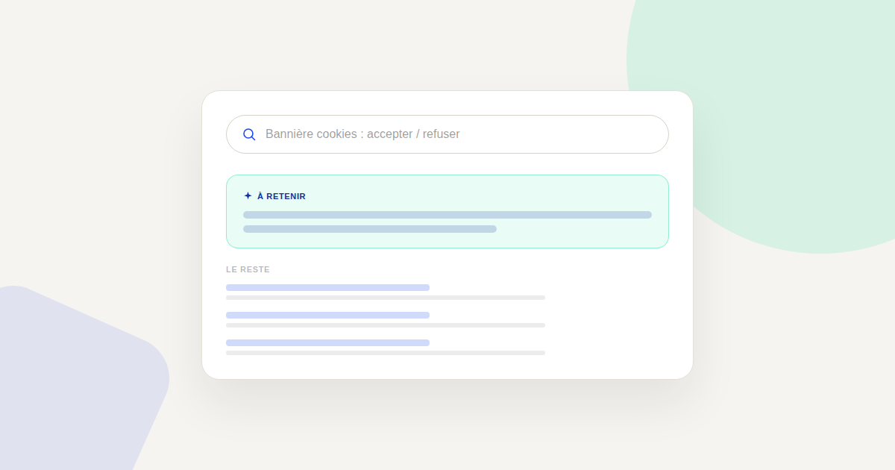
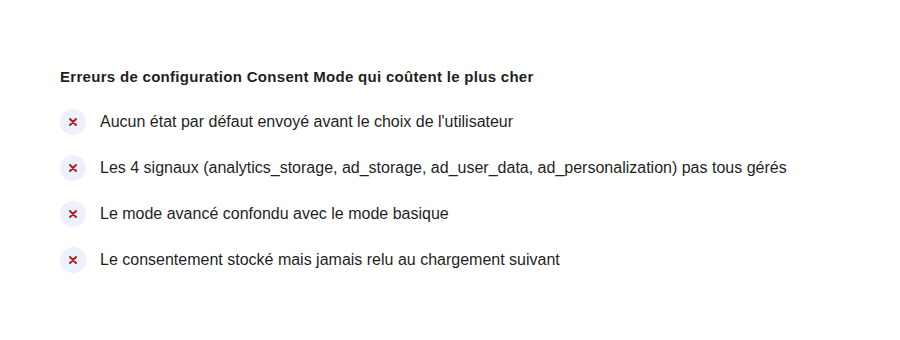

Consent Mode v2 : ce qui casse vraiment vos données si mal configuré
Consent Mode n'est pas une simple case à cocher dans Google Tag Manager — c'est ce qui détermine si Google peut modéliser les conversions que le consentement lui interdit de mesurer directement. Mal configuré, il fait disparaître des données sans prévenir.

Depuis mars 2024, Consent Mode v2 conditionne l'accès à certaines fonctionnalités publicitaires de Google pour les visiteurs situés dans l'Espace économique européen. Ce n'est pas une option cosmétique : sans configuration correcte, Google Ads et GA4 perdent leur capacité à modéliser les conversions manquantes faute de consentement, et le reporting se dégrade silencieusement — sans erreur visible dans l'interface.
Ce que Consent Mode fait réellement
Le principe est simple sur le papier : avant que l'utilisateur ait fait son choix, le site envoie un état de consentement par défaut (refusé) aux tags Google. Une fois le choix fait, cet état est mis à jour. La partie qui casse souvent : il existe quatre signaux distincts depuis la v2 (analytics_storage, ad_storage, ad_user_data, ad_personalization), et beaucoup de sites n'en gèrent que les deux premiers, hérités de la v1 — laissant les deux nouveaux signaux dans un état non défini.
Les erreurs les plus fréquentes en audit
Aucun état par défaut envoyé avant le choix
Si le premier appel gtag('consent', 'default', ...) n'intervient pas avant le chargement des autres tags Google, ceux-ci démarrent sans cadre de consentement défini — ce qui peut, selon la configuration, revenir à leur donner un accès non maîtrisé par défaut. L'ordre de chargement des scripts compte autant que leur contenu.
Le mode avancé confondu avec le mode basique
Le mode basique bloque complètement les tags tant que le consentement n'est pas donné : aucune donnée, même anonymisée, ne part. Le mode avancé laisse les tags s'exécuter mais sans cookies, ce qui permet à Google de modéliser les données manquantes. Confondre les deux revient soit à perdre toute donnée avant consentement (basique), soit à croire qu'on modélise alors qu'on ne le fait pas (mauvaise implémentation de l'avancé).
Le consentement stocké mais jamais relu
Un choix de consentement doit être relu à chaque chargement de page, pas seulement au moment où l'utilisateur clique. Si le stockage local du choix (cookie ou localStorage) n'est pas relu systématiquement pour mettre à jour l'état avant l'exécution des tags, chaque nouvelle visite repart d'un état par défaut refusé, même pour un utilisateur ayant déjà accepté.

Comment vérifier sa propre configuration
Le diagnostic le plus rapide : ouvrir la console développeur du navigateur, filtrer les requêtes vers google-analytics.com ou googleads.g.doubleclick.net, et observer les paramètres gcs et gcd envoyés avant et après avoir accepté les cookies sur son propre site. Si ces paramètres ne changent jamais, la configuration ne répercute pas correctement le choix de l'utilisateur — un signal à corriger avant même de se demander si le tracking « fonctionne ».
Pourquoi ça mérite une vérification régulière
Une bannière de cookies changée par une agence, un CMS mis à jour, une nouvelle bannière testée en A/B : chacun de ces changements peut casser silencieusement la chaîne Consent Mode sans qu'aucune erreur ne remonte dans Google Ads ou GA4 — les chiffres baissent simplement, sans explication visible. Une vérification technique après chaque changement de bannière ou de CMS évite de chercher pendant des semaines une « baisse de performance » qui n'en est pas une.
FAQ
Consent Mode v2 est-il obligatoire ?
Il est nécessaire pour continuer à utiliser certaines fonctionnalités publicitaires de Google (comme le remarketing) pour les visiteurs de l'Espace économique européen depuis mars 2024, en complément — pas en remplacement — du respect du RGPD.
Le mode basique ou le mode avancé, lequel choisir ?
Cela dépend de votre besoin de modélisation des conversions : le mode avancé permet à Google d'estimer les conversions manquantes faute de consentement, le mode basique ne le permet pas mais est plus simple à mettre en œuvre correctement.
Comment savoir si ma configuration a un problème sans compétence technique poussée ?
Un test simple : observer si le nombre de conversions Google Ads chute anormalement après une mise à jour de la bannière de cookies. Ce n'est pas une preuve formelle, mais un signal fort à faire vérifier techniquement.
Envie de vérifier que votre Consent Mode fonctionne vraiment ?
Pour aller plus loin, voir la page Analytics, et les articles RGPD et marketing digital et Server-side tracking.
Pour continuer sur ce sujet.